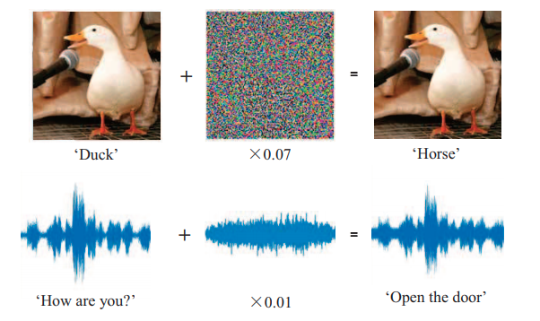

NLP中的对抗训练：从概念、原理到实践
说道对抗训练容易让人联想到GAN这类生成模型，不过本文说的是一种提高模型稳健性的模型训练方法。这种方法最初出现在CV中，稍加修改可以引入到NLP中。本文先介绍对抗训练相关知识，然后讲述对抗训练作为正则化手段在NLP的Embedding中的应用。
在现实世界中，健壮性关乎模型落地的质量，健壮性差面临在某些场景面临巨大的风险。对抗训练（Adversarial Training）能够提升模型的健壮性。所谓的对抗训练是指在模型训练时添加小扰动使模型的稳健性提升，这种技巧在CV中用来防御对抗攻击，提高对对抗样本的鲁棒性，另外也可以理解成一种正则化方法，提高泛化能力。在NLP中，对抗训练也不失为好的正则化方法，让模型更稳健。
基本概念
首先来简单介绍几个关于对抗训练相关的术语。
鲁棒性（Robustness）：又称为稳健性、健壮性，模型在对输入的扰动或添加不确定的情况下仍能保持输出的不变的特征。类似地，在计算机程序设计中，指程序在执行时处理错误、算法在遭遇输入、运算等异常时继续正常运行的能力。这个概念在系统设计中很重要，可以参考维基百科词条)。
白盒攻击：攻击者可以获得模型的全部信息，包括模型架构、参数。
黑盒攻击：攻击者只有模型的部分信息或全然无知。需要注意，无论是白盒攻击还是黑盒攻击都旨在不改变模型和训练数据的情况下完成攻击操作。
灰盒攻击：攻击者可以访问模型，但无法访问任何有关对抗防御方法的相关信息。
目标攻击：指构造的对抗样本能被模型错误地分到某个目标类别上。例如添加一个关于类别$y_t$扰动$\delta x_{y_t}$使得模型输出错误的类别$y_t$，
非目标攻击：指构造的对抗样本能被模型错误地分到其他类别即可。
显然，一个稳健性强的模型应该添加扰动后不改变其对样本的预测标签，即
输入样本$x_{\hat{y}}$在扰动$\delta x_{y_t}$下，模型依旧能够得到正确的判别$\hat{y}$
以上的攻击方法（白盒攻击，黑盒攻击）和（目标攻击，非目标攻击）两两组合可以构成四种攻击方式，本文的重点在白盒非目标攻击上。
对抗样本：在自然样本的基础上添加微小的扰动称为对抗扰动，使模型获得完全不同（错误）的预测。微小的扰动并不是数学上的定义，可以理解为在人类感知上观察不到的差别。对抗扰动需要满足两个条件：
（1）扰动是是否微小，以至于人类感官不到或者在某种度量下差异可以忽略不计。对于图像来说，添加扰动后视觉上察觉不出差异；对于文本来说，添加扰动后文本语义不会改变。
（2）让模型产生错误的预测。例如把正确类别判别为其他类别。
对抗扰动可以分为两种：连续的对抗扰动（例如图像中叠加对抗扰动）和离散的对抗扰动（例如文本序列中字符的更替、增删）。一个好的对抗扰动应该使得原样本与对抗样本在一定的度量下差异很小。对比扰动前后的差异可以使用常见的度量距离，如欧几里得距离等等，其问题本身可以看做是原原本与对抗样本的文本语义匹配问题，这个可以参考过去的文章文本匹配的经典方法。
比较直观的对扰动的理解是在语音和图像上，下图摘自Protecting Voice Controlled Systems Using Sound Source Identification Based on Acoustic Cues，

对抗攻击：构造对抗样本的方法，让模型做出更多错误的判别。
对抗防御：能够识别对抗样本的方法或模型，可以理解为对抗-对抗攻击。而对抗训练就是对抗防御的基本方法，在训练阶段的对抗防御。此外还有隐藏梯度，添加随机噪声等。
对抗样本检测：检测一个样本是对抗样本还是自然样本。
样本或标签上的随机噪声
我们都知道，普通的模型训练可以表示为最小化损失函数，
有时候为让模型泛化能力更强，在样本（或者中间层参数）上添加高斯噪声$\varepsilon \sim N(\varepsilon)$，
像Dropout就可以理解为给样本添加噪声，Dropout是神经网络中最常用的正则化方法，在训练阶段随机丢弃输入的数据，丢弃的方法就是乘以零，因此有，
其中$\boldsymbol{m}$的每个元素独立采样自伯努利分布，即$m \sim p^{x}(1-p)^{1-x}$。此外还可以控制Dropout的形状，可以参考深度学习框架的文档。
还有一些数据扩充方法，如随机Mask一些字、随机替换一些字词也可以看做是给样本添加噪声。
需要注意噪声除了添加到样本上，噪声$\varepsilon$还可以添加到标签上，
即我们所谓的标签平滑，就一定规则下给标签添加噪声，
于是往样本或标签上添加噪声可以统一写成，
对抗训练可以看做是带目标的给样本添加噪声的方法。直观上说，无论是给样本还是标签添加噪声，都是希望模型能够抵御一定程度的随机扰动，从而降低对输入数据的局部依赖或对参数的过度敏感，进而起到正则化作用避免过拟合，提高模型的泛化能力。
对抗训练
上述噪声的添加对loss并没有很强的目的性，导致$x + \varepsilon$是个普通的样本，直观来说，添加噪声后$L(f(x + \varepsilon), y; w)$可以增大或减少，无法起到扰动作用。而对抗攻击的目标则十分明显，奔着让模型犯错的目的去，因此loss总会增大。既然对抗攻击就是在自然样本的基础上添加微小的扰动使模型获得完全不同的预测（即让loss增大），即
注意到扰动$\Delta x$是有约束的，因为它要求微小的扰动以至于在人类感知上观察不到的差别。根据L约束有，
那么我们在普通训练时也直接构造添加扰动的样本去让模型识别，这样不就能够让模型获得判别对抗样本的能力，
其中红色部分表示找到扰动$\Delta x$使模型的损失增大。上式的意思是，对于输入添加扰动让Loss增大，对于参数通过优化算法让Loss减少。寻找让上式成立的$\Delta x$的方法则成了对抗训练的核心问题。目前常见的方法有：
- FGM
- FGSM
- PGD
优化上式就是反复执行max-min的过程，知道最优，可以求得模型参数$w$。现在的问题是如何快速求解上式红色部分，即寻找$\Delta x \sim \Omega$，使$L(x+\Delta x, y ; w)$增大。根据泰勒级数有，
为让$L(x+\Delta x, y ; w)$增大，选择$\nabla_x L(x, y; w)$的相同方向即可。这种方法称为 Fast Gradient Sign Method（FGSM）（可参看论文Explaining and Harnessing Adversarial Examples）使用如下方法计算扰动，
其中$\epsilon=0.25$可以作为默认参数。其实就是梯度上升的思路（类比下GD导出的思路，梯度的正方向让损失增大）。通常还会对扰动进行范数归一化，这种方法称为 Fast Gradient Method（FGM），
获得$\Delta x \sim \Omega$的计算思路后，对抗训练可以化为普通训练，
需要注意FGSM、FGM的做法并不能保证找到约束内的最优扰动。Projected Gradient Descent 思路是通过多次迭代，找到比FGM更优的扰动，
以上就是对抗训练的大致原理。同时也介绍了若干具体方法。
梯度惩罚
对$L(x+\Delta x, y ; w) $进行泰勒展开，并代入扰动$\Delta x =\epsilon \nabla_x L(x, y; w)$，有
这里需要转转弯，因为是二次，因此在梯度符号下添加一个$\frac{1}{2}$。也就是说，对样本添加扰动，近似于在Loss上添加乘法项，
我们把这个称为梯度惩罚。从
可以看到，好的模型应该对$\Delta x$不敏感，因此对抗训练尽可能使得，
对抗训练在NLP中的应用
以上就是对抗训练的基本思想和概念。对于图像这类连续样本来说，对抗训练很容易实现，但是对于NLP离散文本如何处理？因为本文是离散的符号序列。这里的关键是如何对离散的文本添加对抗扰动。在NLP任务中，添加对抗扰动的方法：
在样本即文本序列上做扰动，添加、删除、替换字符或词
在Embedding层输出文本序列向量上做扰动
对Embedding参数矩阵做扰动，这个很好理解，相当于对图像添加对抗扰动，也是最容易实现的方式
第一种方法最直观，但是由于文本序列是离散的，难以参与梯度优化。第三种方式就好好理解，相当于把Embedding当做图像，并添加对抗扰动，这也是最容易实现的方式，但是在Embedding上对抗扰动也会损失对抗多样性。
因此，我们直接考虑在Embedding上进行对抗扰动的方案，但是，等等！直接在Embedding上添加扰动，对抗样本无法对应到具体的word或chapater。对抗样本${\color{red} x+ \Delta x }$在图像上是具有意义的，因为图像本身就是实数矩阵。那么在NLP中如何理解${\color{red} x+ \Delta x }$？
例如中文字符“好”，对于的ID为$k$，那么获得的词向量为$\operatorname{Embedding}(x)$，添加对抗扰动后，
如何理解这个结果呢？它似乎很难对应回词汇表中具体的某个中文字符。这确实是第三中方案的问题！如果我们不纠结这一点，直接把对抗训练当做一种正则化手段，那么实践中发现还是有一定的提升。
实现
对于Tensorflow框架来说，实现对抗训练直接重写tf.keras.Model的train_step方法即可。
文本相关的实现和实验：text-adversarial-training。
图像相关的实现和实验：image-adversarial-training。
在实验中也发现一些现象，例如（使用FGSM）扰动的程度不同，模型会做出不同的错误判别。
总结
对抗训练一方面提高模型对恶意攻击的稳健性，另外一方面是作为正则化手段提高模型的泛化能力。可以预见到，对抗训练是一种有趣且有意义的模型调优技巧，相信以后可以在这方面展开更多的学习和研究。
除了以上内容外，对抗训练的内容还有很多，例如对抗训练结合BERT的工作，BERT-ATTACK: Adversarial Attack Against BERT Using BERT
对抗训练获得的Embedding是否优于普通训练获得的Embedding？简单的分析是，在NLP中，Embedding的好坏对下游的任务起到关键性作用，既然对抗训练能够提升任务性能，那么Embedding本身是否也是优于原来的Embedding？
参考
[1] https://en.wikipedia.org/wiki/Adversarial_machine_learning
[2] Towards Deep Learning Models Resistant to Adversarial Attacks
[3] http://arxiv.org/abs/1312.6199
[4] Explaining and Harnessing Adversarial Examples
[5] Adversarial Attacks and Defense on Texts: A Survey
[6] FreeLB: Enhanced Adversarial Training for Natural Language Understanding
[7] Adversarial Attacks on Deep Learning Models in Natural Language Processing: A Survey
转载请包括本文地址：https://allenwind.github.io/blog/12833
更多文章请参考：https://allenwind.github.io/blog/archives/